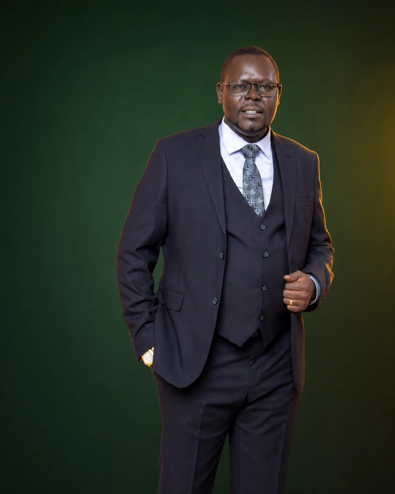
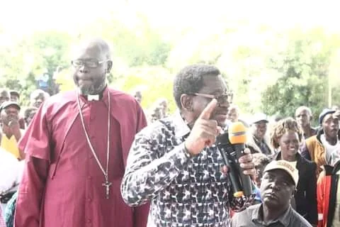
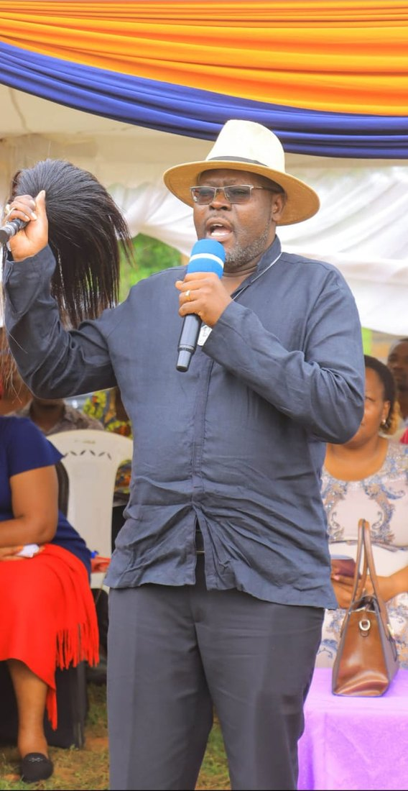
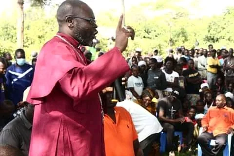
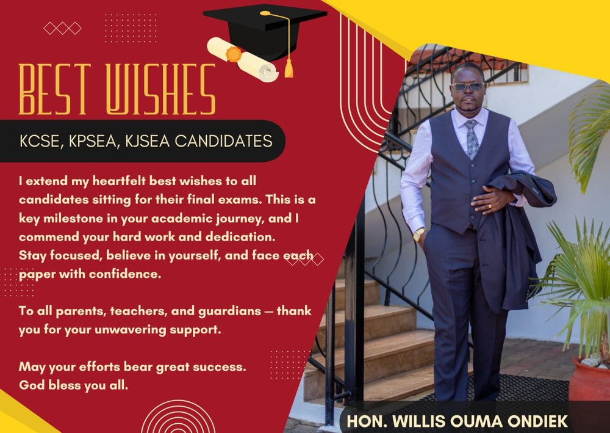
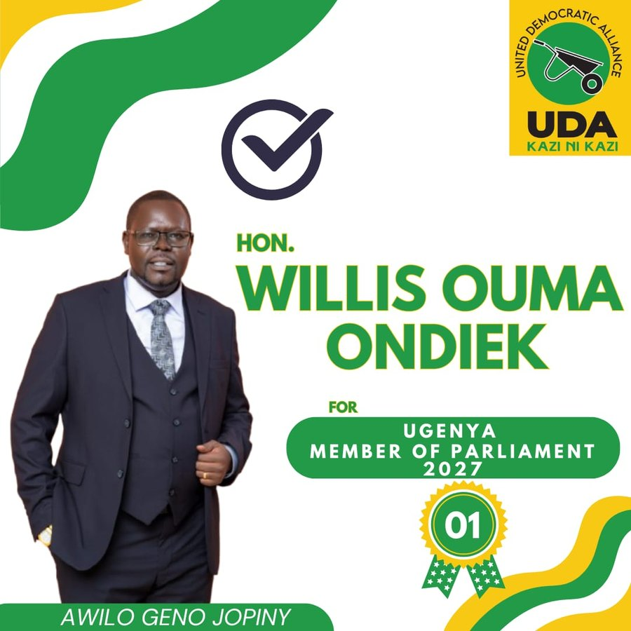
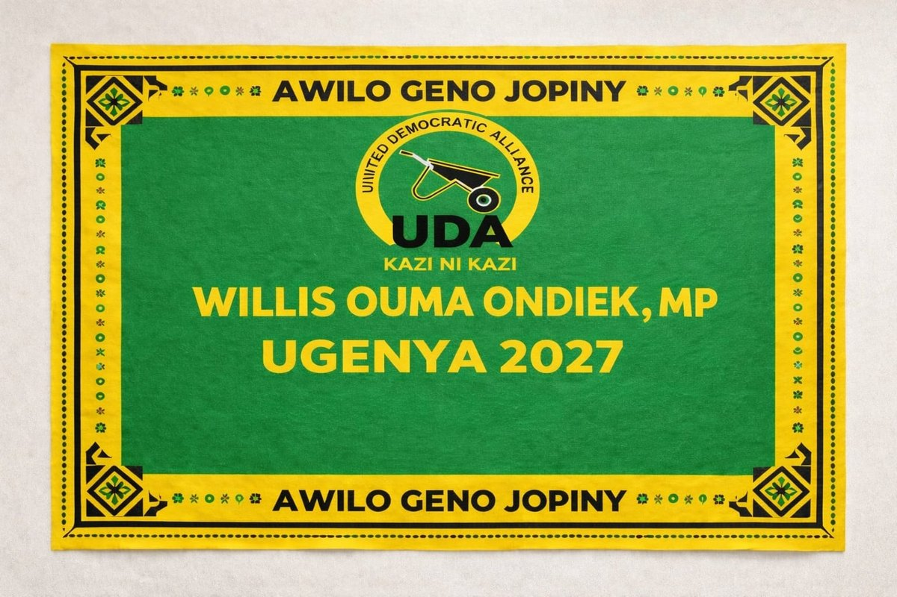
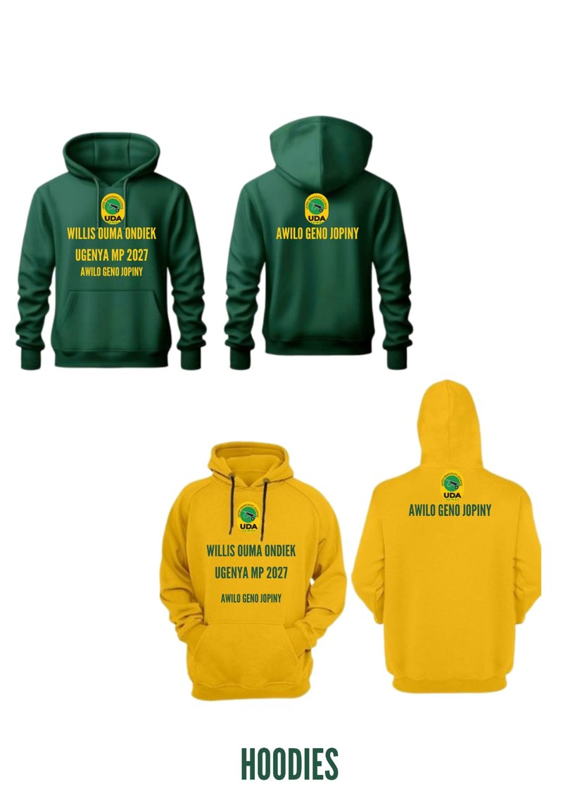
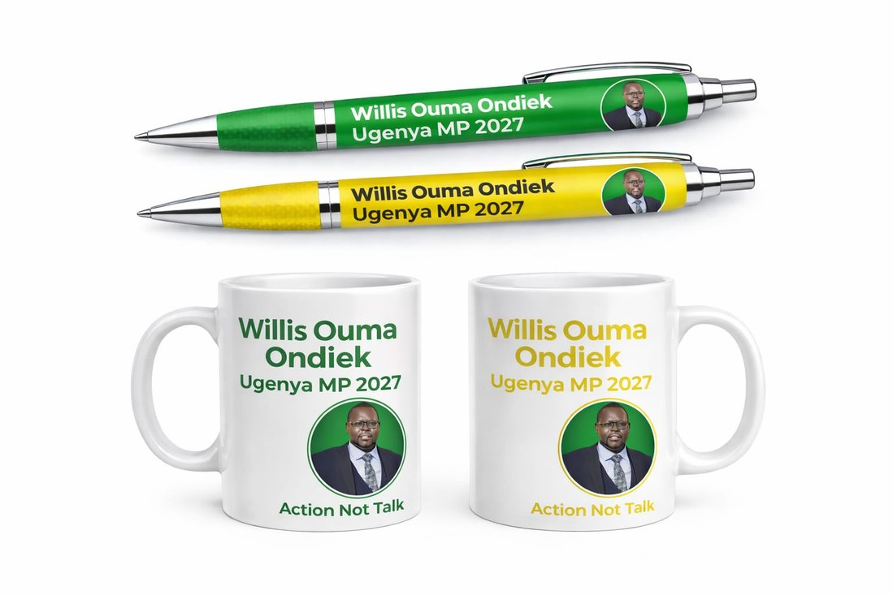

Ugenya Manyien
A united, educated, healthy and economically empowered Ugenya.
A stronger, more united and prosperous constituency where practical development turns potential into progress.
Ugenya Constituency
Willis Ouma Ondiek
A campaign centred on practical priorities, shared progress and a united Ugenya.

Meet the candidate
Popularly known as AWILO, Willis Ouma Ondiek is a father, finance expert, divine teacher and community-minded leader seeking to serve as Member of Parliament for Ugenya Constituency in 2027.
His experience in finance has shaped a strong understanding of resource management, accountability and economic empowerment. His community-development work has strengthened his conviction that leadership must ultimately be measured by the lives it transforms.
Ugenya deserves leadership that sees beyond today, plans for tomorrow and turns the potential of its people into tangible progress.
Ugenya Manyien
A stronger, more united and prosperous constituency where practical development turns potential into progress.
Leadership
Responsible use of public resources, inclusive leadership and a development agenda that looks beyond today and plans for tomorrow.
Ugenya Manyien vision
Education, healthcare, economic empowerment, infrastructure and community unity form the foundation of the 2027 vision.
Make local connectivity and mobility a core campaign focus.
DETAILS TO BE CONFIRMEDPlace learning and opportunity for young people at the heart of the agenda.
DETAILS TO BE CONFIRMEDKeep accessible, community-centred healthcare among Ugenya’s priorities.
DETAILS TO BE CONFIRMEDFocus on pathways for livelihoods, enterprise and local potential.
DETAILS TO BE CONFIRMEDBring people together around shared priorities and progress.
DETAILS TO BE CONFIRMEDStronger bursaries and scholarships, support for vulnerable learners, improved school infrastructure, digital learning and wider pathways to university, TVET, technical training or entrepreneurship.
Advocacy for equipped facilities, adequate supplies, reliable staffing, maternal and child health, preventive care and stronger access to national health insurance.
Support for SMEs, cooperatives, agriculture, value addition, vocational skills, digital opportunity and inclusive enterprise for youth, women and persons living with disabilities.
Dialogue and shared responsibility across political, clan and other divisions—bringing elders, women, youth, professionals, faith leaders and community organisations around one agenda.
A dedicated vision page for dignity, opportunity and shared prosperity.
Ugenya first
This campaign is intended to engage communities throughout Ugenya. Ward-level priorities, listening-tour dates and community submissions will be added only after campaign confirmation.
Share a community priority →Ward names, local campaign offices and field contacts are awaiting campaign verification.
On the ground
Verified news and campaign activity will appear here.

Willis Ouma Ondiek engaging with members of the community about service, dignity and Ugenya’s shared future.

Event details and the candidate’s remarks will be published after campaign confirmation.

A public gathering focused on community, leadership and service.

A campaign message supporting candidates sitting national examinations.
Meet AWILO
A major public unveiling of Willis Ondiek’s vision and development agenda for Ugenya Constituency.
Campaign moments
A selection of supplied campaign materials and moments.




Be part of it
Register your interest in volunteering. This demonstration form opens an email draft and does not store your information.
Get in touch
Campaign office: Sifuyo, Ugenya Constituency